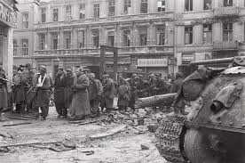
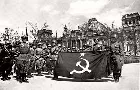

Battle of Berlin
The Battle of Berlin, fought from April 16 to May 2, 1945, was the decisive final confrontation of World War II in Europe. The last stand of Nazi Germany would unfold on the very streets of its capital, where the Soviets, driven by vengeance and a desire to end Hitler’s reign once and for all, launched a final, crushing assault to capture the heart of the Third Reich.
The Last Days of Nazi Germany
By the spring of 1945, Nazi Germany was on the brink of collapse. The Allied forces had already crossed into German territory from the west, and Soviet forces were closing in from the east. Hitler’s once-mighty empire was crumbling under the weight of Allied bombings, internal dissent, and the relentless pressure from the Soviet Red Army. Berlin, the heart of Hitler’s nightmare regime, became the last symbol of defiance.
The German forces defending the city were a ragtag collection of Wehrmacht soldiers, Volkssturm (German militia), and SS troops, many of whom were poorly trained, exhausted, and demoralized. Their commander, Hitler himself, was holed up in his underground bunker, giving increasingly erratic orders, and stubbornly refusing to acknowledge the reality of his imminent defeat.
The Soviet Siege
The Red Army, under the command of Marshal Georgy Zhukov and Marshal Ivan Konev, began their assault on Berlin on April 16, 1945. The battle was a relentless urban siege, with Soviet forces surrounding the city from all sides. Soviet artillery began to pound the city into ruins, and waves of infantry and tank divisions began their methodical push toward the city center.
The streets of Berlin became a blood-soaked battlefield. The Soviet soldiers, fueled by vengeance and hatred for the atrocities committed by the Nazis, advanced with a determination born of years of suffering. The German defenders, many of them fanatical Nazi diehards, fought to the death, but it was clear that the city was doomed.
The Last Stand
As the Soviets encircled Berlin, the Germans put up a desperate resistance. The final months of the war had seen the collapse of the Nazi regime, and even though Hitler had been dead by the time Berlin fell, his remaining loyalists fought in his name, hoping for a miracle. But there was no miracle. Soviet tanks rolled through the city’s streets, crushing any resistance in their path.
On April 30, 1945, Hitler committed suicide in his bunker as the Soviet forces drew closer. His death symbolized the end of the Nazi regime. The fighting continued, but Berlin was already lost. The Battle of Berlin became a symbol of Nazi Germany’s utter destruction, and by May 2, the last of the German forces in the city surrendered.
The End of Nazi Germany
With the fall of Berlin, Nazi Germany was officially defeated. The Allied forces in the west and the Soviets in the east had accomplished what had once seemed impossible: they had brought down one of the most brutal regimes in history. The Soviet victory in Berlin marked the final chapter in the European theater of World War II.
Impact and Legacy
The Battle of Berlin left the city in ruins. It was the ultimate symbol of the total collapse of Hitler’s dream of empire. The battle also demonstrated the Soviet Union's enormous contribution to the defeat of Nazi Germany, with over 1 million Soviet soldiers involved in the operation.
The end of the battle also marked the beginning of the Cold War, as the Soviets and the Western Allies now faced each other as competing superpowers. The destruction of Berlin and the eventual division of Germany would shape the post-war world for decades to come.
The Battle of Berlin stands as one of the final, harrowing moments of World War II—a city reduced to rubble, its people crushed under the weight of their own Nazi regime, and the Soviet Union standing victorious at the gates of Hitler’s once-glorious capital.